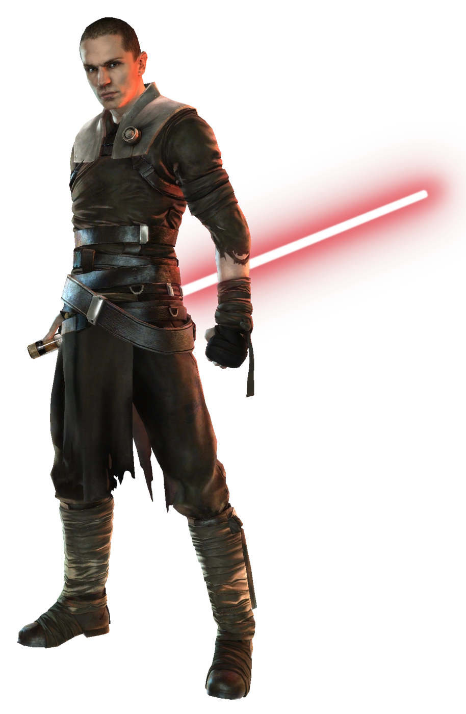

DARTH VADER

Darth Vader, nascido como Anakin Skywalker, é o antagonista central da franquia Star Wars.
Ele era um Cavaleiro Jedi de alto escalão que lutou pela República Galáctica e também "o Escolhido", o
indivíduo profetizado que destruiria os Sith e traria equilíbrio à Força. No entanto, no final das Guerras
Clônicas, ele sucumbiu ao lado sombrio e se tornaria um poderoso Lorde Sith a serviço do recém-criado
Império Galáctico .
Ele é o ex-Padawan de Obi-Wan Kenobi, o ex-mestre Jedi de Ahsoka Tano, o último aprendiz Sith de Darth
Sidious, o pai de Luke Skywalker e Leia Organa, e o avô de Ben Solo. Na continuidade Legends, ele é o avô de
Jacen Solo, Jaina Solo, Anakin Solo e Ben Skywalker.
PODERES:
Características físicas sobre-humanas, sentidos aprimorados, várias habilidades de combate
com sabre de luz, espadachim habilidoso, precognição, telecinese, telepatia, manipulação da mente, manipulação
da memória, psicometria, criação de barreira (na forma de campos de força), manipulação de energia (pode
refleti, redirecionar e absorver ataques de energia lançados contra ele), Tecnocinese (Usou a Força para
destruir um andróide de treinamento Jedi e então usou as partes do andróide para reconstruir telecineticamente
seus próprios membros cibernéticos danificados), Poder da Fúria (Pode se tornar mais poderoso quando
suficientemente irritado), detecção da aura, presciência, clarividência, Criação de Ilusão, Psicometria,
Explosões de Energia (na forma de Kinetita), Regeneração (Médio-Baixo; em a forma de Cura pela Força),
Resistência a Veneno, Manipulação de Matéria em escala subatômica, Resistência para Transmutação (resistiu aos
efeitos do Muur Talisman que transforma até mesmo os usuários de força em monstros conhecidos como Rakghouls),
resistência à drenagem de força.
Aprendiz:

Galen Marek também nomeado como Starkiller foi o aprendiz secreto de Darth Vader. Nasceu em Kashyyyk e era
filho do Cavaleiro Jedi Kento Marek e Mallie Marek que fugiram devido à proibição de relacionamento amoroso
entre Jedi e ficaram a morar em Kashyyyk usando suas habilidades de cura para ajudar os nativos do planeta,
os Wookiees. Quando Darth Vader derrota Kento, ele encontra Galen e secretamente, o resgata para tornar seu
aprendiz, logo Galen vira o aprendiz secreto de Darth Vader. Ele foi treinado para matar Jedis que
sobreviveram a Ordem 66.O Imperador não podia saber da existência do aprendiz, pois isso iria contra a Regra
de Dois. Foi ele quem reuniu os rebeldes e formou a Aliança Rebelde.